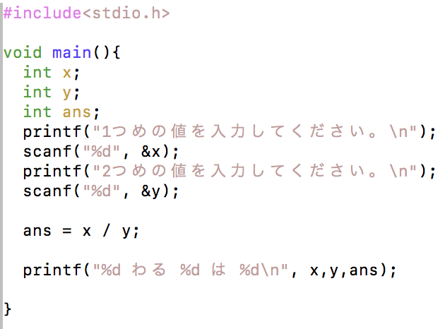

見やすい・分かりやすいソースコードを書く癖をつけましょう。
見やすく・分かりやすいソースコードは、単純なミスを防げるだけでなく、プログラムの流れを直感的に捉えやすくなります。
これは、長いコードになればなるほど重要になってきます。
参考資料 見やすいソースコードの書き方
以下のソースコードを打ち込み、コンパイルして実行してみましょう。
Name.c
実行すると、以下のようになります。
名前を入力してください。
ここで、キーボードから何か入力し、リターンキーを打ちます。
この例では、首都大と入力しました。
実行結果
名前を入力してください。
首都大
あなたの名前は、首都大ですね。
入力した文字列を出力することができました。
次に、数値の入力をしてみましょう。
Calc.c
入力できたら、コンパイルして実行してみましょう。
ここでは、5 と 7 を入力しました。
実行結果
１つめの値を入力してください。
5
２つめの値を入力してください。
7
5たす7は12
2つの値を入力すると、それの和が表示されるプログラムです。
非常に簡単ですが、プログラムのポイントを説明します。
次のようなプログラムを考えてみましょう。前のソースコードを少し改良しただけです。
Calc2.c

このプログラムは、入力した２つの値の商を求めるプログラムです。
いろいろな値を入れて計算してみましょう。
それでは、次の場合を考えてみましょう。
実行結果
１つめの値を入力してください。
5
２つめの値を入力してください。
2
5わる2は2
もちろんこの答えは正しいのですが、答えを 2.5 と返してほしいときはどうすればよいのでしょうか。
それでは、以下のようにプログラムを改良してみましょう。
Calc2.c
変数a, b, ans を double 型で宣言するよう変更しました。この double 型は、小数を含む計算する場合に用いられる変数型です。
よって、先ほどのように 5 と 2 を入力すると、2.5 という答えが返ってきます。
実行結果
１つめの値を入力してください。
5
２つめの値を入力してください。
2
5.0わる2.0は2.5
次に、以下のように改良してみましょう。
Calc2.c
変数 b を int 型にし、他の変数 a, ans は double 型です。int は整数を扱う場合に用いる変数型です。
この場合も、2.5 という答えが返ってきます。
これは、１つの数式で、異なる型が使われた場合、より大きな型のサイズに合わせて計算するという決まりがあるからです。
基本データ型の大きさ
double > float > long > int > short > byte
上の表を見れば分かるように、ans の値（つまり、a/b ）は、double/int であるので、double 型に統一されて計算されます。
よって、この場合でも 2.5 という答えが返ってきます。
では、次のように改良してみましょう。
Calc2.c
今度は、変数 ans に代入する式に、 (double) が付け加わっています。
この場合も、5 と 2 を入力すると、2.5 が表示されます。
実行結果
１つめの値を入力してください。
5
２つめの値を入力してください。
2
5わる2は2.5
この (double) を キャスト演算子 といい、強制的に型変換を行うことができます。
キャスト演算子
(変数型)
より大きな型への変換だけではなく、小さな型へも変換ができます。
その場合、保存されているデータの一部が失われ、値が変わってしまうこともあります。
このソースコードの15行目 double ans = (double) a / b から、キャスト演算子を取り除くと（つまり、double ans = a / b）計算結果はどのように変化する、あるいは変化しないでしょうか。またそれはなぜでしょう。
上の Calc2.c を改良して、以下のような結果を出力するプログラムを書いてみましょう。
実行結果
１つめの値を入力してください。
5
２つめの値を入力してください。
2
5 + 2 = 7
5 - 2 = 3
5 * 2 = 10
5 / 2 = 2 あまり 1
三角形の底辺と高さの値を入力することで、その三角形の面積を計算するプログラムを作りましょう。
実行結果
三角形の底辺と高さの値を入力してください。
5
3
三角形の面積は、7.5です。